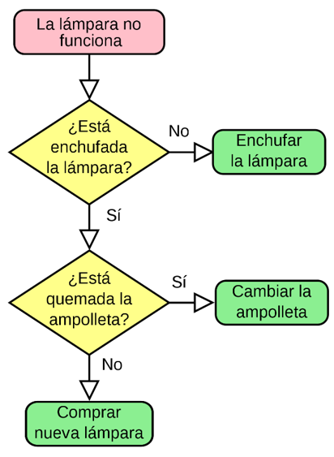

1º DAW - Programación - UT 1
Orientaciones
Orientaciones
En esta unidad vamos a tratar los conceptos introductorios de todo el curso. Se abordarán temas que sirven de base a las siguientes unidades.
Esta unidad es eminentemente teórica, por la que se recomienda que se haga un primer estudio superficial, entendiendo los conceptos y en un segundo estudio profundizar en los conocimientos de forma más profunda.
No es necesario ningún tipo de conocimiento anterior y el nivel de partida es básico, siendo accesible a todos el alumnado.
1.1 El origen de la informática
La historia del ordenador se remonta a las primeras reglas de cálculo y a las primeras máquinas diseñadas para facilitarle al ser humano la tarea de la aritmética. El ábaco, por ejemplo, fue un importante adelanto en la materia, creado alrededor de 4.000 a. C.
También hubo inventos muy posteriores, como la máquina de Blaise Pascal, conocida como Máquina de Pascal o Pascalina, creada en 1642. Consistía en una serie de engranajes que permitían realizar operaciones aritméticas. Esta máquina fue mejorada por Gottfried Leibinitz en 1671 y se dio inicio a la historia de las calculadoras.
Los intentos del ser humano por automatizar continuaron desde entonces: Joseph Marie Jacquard inventó en 1802 un sistema de tarjetas perforadas para intentar automatizar sus telares, y en 1822 el inglés Charles Babbage empleó dichas tarjetas para crear una máquina de cálculo diferencial.
Otro importante fundador en este proceso fue Alan Turing, creador de una máquina capaz de calcular cualquier cosa, y que llamó “máquina universal” o “máquina de Turing”. Las ideas que sirvieron para construirla fueron las mismas que luego dieron nacimiento al primer computador.
Otro importante avance fue el de ENIAC (Electronic Numeral Integrator and Calculator, o sea, Integrador y Calculador Electrónico Numeral), creado por dos profesores de la universidad de Pensilvania en 1943, considerado el abuelo de los computadores propiamente dicho. Consistía en 18.000 tubos de vacío que llenaban un cuarto entero.
Por último, la historia de los computadores no habría tenido el curso que tuvo sin la invención en 1947 de los transistores, fruto de los esfuerzos de los laboratorios Bell en Estados Unidos, dando origen a lo que conocemos hoy en día.
Historia de la informática
1.2. Conceptos informáticos básicos
La razón principal por la que una persona utiliza un ordenador es para resolver problemas (en el sentido más general de la palabra) o, en otras palabras, procesar una información para obtener resultados a partir de unos datos de entrada.
Los ordenadores resuelven los problemas mediante la utilización de programas escritos por los programadores. Los programas de ordenador no son entonces más que métodos para resolver problemas. Por ello, para escribir un programa, lo primero es que el programador sepa resolver el problema que estamos tratando.
El programador debe identificar cuáles son los datos de entrada y a partir de ellos obtener los datos de salida, es decir, la solución, a la que se llegará por medio del procesamiento de la información que se realizará mediante la utilización de un mecanismo para resolver el problema denominada algoritmo.
Algoritmo o programa: secuencia de instrucciones que entiende el ordenador.
1.3. Clasificación del Software
El software es elemento que desarrollan los programadores destinado a gestionar los recursos de un ordenador y a realizar las tareas para las que se diseño.
Hay diferentes clasificaciones de software, en nuestro caso atenderemos exclusivamente a la funcionalidad del mismo.
- Software de sistema. Elementos que permiten el mantenimiento del sistema en global: sistemas operativos, controladores de dispositivos, etc.
- Software de programación. Diferentes alternativas y lenguajes para desarrollar programas de informática.
- Software de aplicación. Permite a los usuarios llevar a cabo una o varias tareas específicas en cualquier campo de actividad.
Nosotros crearemos generalmente software de aplicación.
1.4. Qué es la programación
1.4.1. Concepto
La programación es el proceso mediante el cual se diseña y codifica un algoritmo a través de un conjunto de instrucciones siguiendo una sintaxis concreta (lenguaje). Este proceso no es sencillo ni rápido y tenemos que ser muy cuidadosos para que el resultado final sea un producto “aceptable”.
La creación de un algoritmo se basa en la resolución de problemas reales por nosotros. Generalmente ante un problema, lo primero que hacemos es observarlo para determinar todos los factores que intervienen, a continuación, desarrollamos un conjunto de soluciones que nos parecen factibles para resolverlo, siendo la última etapa la implementación (llevar a cabo) una de las soluciones para resolver el problema planteado, así como realizaremos pruebas para comprobar su correcto funcionamiento.
La programación ha evolucionado a lo largo de los años, presentando diversas maneras de llevarse a cabo, creando lo que se llaman paradigmas de la programación. Estos paradigmas se siguen utilizando hoy en día y dependiendo del proyecto que estemos desarrollando se usarán unos u otros o mezcla
Programación es el proceso por el que se diseña y codifica un algoritmo mediante un conjunto de instrucciones siguiendo una sintaxis concreta (lenguaje).
Algoritmo de la programación
- Observación del problema.
- Desarrollo de las posibles soluciones en papel.
- Evaluación de las soluciones y elección de la candidata.
- Implementación de la solución en un lenguaje de programación.
- Realización de pruebas.
1.4.2. Paradigmas de la programación
Los paradigmas son reglas aceptadas de programación que han ido evolucionando paralelas a la tecnología y que utilizaremos según el proyecto que desarrollemos. En la actualidad podemos encontrar los siguientes paradigmas.
- Programación estructurada. La programación estructurada se basa en utilizar solamente tres tipos de estructuras de control en nuestros programas. En concreto se usarán estructuras secuenciales, alternativas e iterativas. Se evitarán completamente el uso de sentencias de salto incondicionales. ¿Qué es una secuencia de control? Una regla del leguaje.
- Secuencias: Ejecución de una instrucción a continuación de otra.
- Bucles o iterativas: Repetición de un conjunto de secuencias un número de veces determinado o mientras que se cumpla la condición.
- Alternativas o condicionales. Ejecución de unas secuencias u otras dependiendo de una condición.
- Programación modular. Este paradigma implica la descomposición del problema en varios sub-problemas menos complejos que se puedan implementar más fácilmente. Se incluye la posibilidad que los sub-problemas se comunique entre sí traspasando datos de unos a otros. La programación modular se basa en crear funciones para lo que tendremos en cuenta los siguientes puntos:
- Cada función tendrá un único punto de entrada y de salida.
- La función se comportará como una caja negra.
- El tamaño orientativo estará entre 30 y 50 líneas.
- Tendrá máxima relación con los elementos de la misma unidad funcional (cohesión).
- Tendrá mínimo dependencia de las demás funciones (acoplamiento).
- Programación orientada a objetos (POO). Este paradigma se estudiará en una unidad de trabajo posterior. Está basada en los procesos de ingeniería tradicional.
1.4.4. Uso de pseInt
Página principal
PSeInt es un intérprete de pseudocódigo para estudiantes de programación. Su objetivo principal es ser una herramienta para aprender y comprender los conceptos básicos de programación y aplicarlos con un pseudocódigo.
https://sourceforge.net/projects/pseint/
PSeInt incluye en su editor diversas herramientas para que podamos crear y almacenar programas, ejecutarlos directamente desde su interfaz, o incluso corregir posibles defectos que encontremos en su desarrollo.
PSeInt es capaz de interpretar los pseudocódigos y transformarlos a diagrama de flujo, para eso dispone de un visualizador y editor de diagramas de flujo. Esto es útil si queremos analizar el pseudocódigo desde un punto de vista gráfico.
1.5. Qué es un algoritmo
Por algoritmo entendemos un conjunto ordenado y finito de operaciones matemáticas que permiten resolver un problema con entradas y salidas definidas que además cumplen las siguientes características:
- Tiene un número finito de pasos.
- Acaba en un tiempo finito. Si no acabase nunca, no se resolvería el problema.
- Todas las operaciones deben estar definidas de forma precisa y sin ambigüedad.
- Puede tener varios datos de entrada y de salida.
Características de los algoritmos
- Tiene un número finito de pasos
- Acaba en un tiempo finito
- Todas las operaciones están definidas de forma precisa
- Pueden tener datos de entrada y salida
Qué es un algoritmo: Resumen
Conjunto ordenado y finito de operaciones que permiten resolver un problema, con entrada y salidas definidas.
Algoritmo para freír un huevo
Debemos pensar en que estamos en la cocina de casa y vamos a freír un huevo. Estudiaremos el problema desde todos los puntos de vista, comenzando por los componentes que necesitamos para nuestra creación, a continuación decidiremos los pasos a dar, para terminar con un producto finalizado.
Realizar una secuencia de pasos numerados para freír el huevo.
Elementos de un algoritmo
- Datos: expresión general que describe con los objetos con los que opera un algoritmo: números (enteros, reales, lógicos, carácter, cadena).
- Constantes: Valores que no cambian a lo largo del programa, almacena un dato.
- Variables: Un objeto que puede cambiar con el desarrollo del programa, almacena un dato.
- Expresiones: combinación de operadores y operandos. Los operadores pueden ser de diversos tipos: aritméticos, lógicos, etc. Los operandos serán datos, constantes o variables.
Requerimientos para ser funcional un algoritmo
Cada vez que hayamos terminado un algoritmo nos haremos las siguientes preguntas para estar seguros de su funcionalidad.
- ¿Produce los resultados esperados?
- ¿Es la solución óptima?
- ¿Cómo va a funcionar nuestro algoritmo si se incrementa la cantidad de datos de entrada?
Ejercicios
Ejercicio Resuelto
Realiza en papel los siguientes algoritmos.
1.- Escribe un algoritmo para cambiar la rueda de un coche.
2.- Escribe un algoritmo para cocinar un plato de pasta
3.- Dadas dos variables numéricas A y B, que el usuario debe teclear, se pide realizar un algoritmo que intercambie los valores de ambas variables y muestre cuánto valen al final las dos variables.
4.- Algoritmo que lea dos números y nos diga cuál de ellos es mayor o bien si son iguales.
5. Algoritmo que lea tres números distintos y nos diga cuál de ellos es el mayor.
Ejercicios
Ejercicio Resuelto
Hacer los siguientes ejercicios
6.- Hacer un algoritmo que imprima los números pares entre 0 y un número solicitado por pantalla.
7.- Un colegio desea saber qué porcentaje de niños y qué porcentaje de niñas hay en el curso actual. Diseñar un algoritmo para este propósito.
8.- Una tienda ofrece un descuento del 15% sobre el total de la compra durante el mes de octubre. Dado un mes y un importe, calcular cuál es la cantidad que se debe cobrar al cliente.
9.- Escribir un algoritmo que pida al usuario que escriba N o S y lo repita hasta que el usuario pulse otra letra. Debe funcionar tanto en minúsculas como en mayúsculas.
10.- Hacer un algoritmo que pida una cadena, la imprima en mayúsculas, después en minúsculas, nos diga la longitud y escriba de una en una sus letras. Cada vez que termina debe preguntar al usuario si desea introducir otra.
1.6. Representación de algoritmos
Uno de los principales problemas que nos encontramos a lo hora de crear una aplicación, es que el programador poco experimentado cree que su herramienta principal de trabajo es el ordenador y se lanza a crear código inmediatamente frente a la pantalla. Esta concepción nos lleva a que el aprendizaje de la programación no se hace de forma correcta y crea vicios muy difíciles de subsanar después.
Si revisamos el ciclo de vida estándar que se muestra más adelante, comprobaremos que solo una de las fases es de codificación, las otras cuatro no, por lo que hay que desbancar la idea de que la programación se aprende exclusivamente delante de la pantalla programando, la programación se aprende primero planificando y comprendiendo lo que queremos hacer y después codificando, por lo que emerge la necesidad de representar de forma gráfica nuestros algoritmos antes de la codificación.
1.6.1 Elementos de los algoritmos
Todo algoritmo tiene los siguientes elementos:
- Datos: expresión general que describe con los objetos con los que opera un algoritmo: números (enteros, reales, lógicos, carácter, cadena).
- Constantes: Valores que no cambian a lo largo del programa, almacena un dato.
- Variables: Un objeto que puede cambiar con el desarrollo del programa, almacena un dato
- Expresiones: combinación de operadores y operandos. Los operadores pueden ser de diversos tipos: aritméticos, lógicos, etc. Los operandos serán datos, constantes o variables.
- Palabras reservadas o cajas de acción. Representan el flujo de movimiento del programa.
La diferentes formas de diseñar en papel un algoritmo se denomina representación.
1.6.2. Diagramas de flujo
Un diagrama de flujo es una representación gráfica del algoritmo. Esta representación siempre debe seguir unas reglas básicas y usar unos símbolos predefinidos para poder entenderlos.
- El comienzo del programa se situará en la parte superior del diagrama de flujo y la finalización abajo.
- El símbolo de comienzo y de fin deberá aparecer una sola vez.
- El flujo de las operaciones será, siempre que sea posible de arriba a abajo y de izquierda a derecha.
- Se evitarán siempre los cruces de líneas utilizando conectores.
- Se podrá dividir el algoritmo entre diversas hojas usando conectores de unión.

Ejercicio Resuelto
Algoritmo que lee dos números “X” e “Y”, determina si son iguales, y en caso de no serlo, indica cuál de ellos es el mayor
Desarrolla el Diagrama de flujo
Ejercicio Resuelto
Algoritmo que lee dos números “X” e “Y”, determina si son iguales, y en caso de no serlo, indica cuál de ellos es el mayor
Desarrolla el diagrama de flujo correspondiente.
Elementos de los diagramas de flujo
Símbolos secuencial y condicionales
El paradigma estructurado se basa en el uso de tres tipos de estructuras de programación:
- Secuencial.
- Condicional.
- Bucles.
Símbolos de bucles
Símbolos de funciones
Un función o procedimiento es un pequeño sub-programa que realiza una única acción, recibe parámetros y opcionalmente devuelve un resultado. Se utiliza como base del paradigma modular.
Ejemplo
Ejercicio Resuelto
Algoritmo que lee dos números “X” e “Y”, determina si son iguales y en caso de no serlo, indica cuál de ellos es el mayor.
Desarrolla el diagrama de flujo.
Ejercicios
Ejercicio Resuelto
11.- Hacer un algoritmo que pida una cadena, la imprima en mayúsculas, después en minúsculas, nos diga la longitud y escriba de una en una sus letras. Cada vez que termina debe preguntar al usuario si desea introducir otra.
Hacer el diagrama de flujo.
12.- Hacer un algoritmo que cuente las veces que aparece una determinada letra en una frase que introduciremos por teclado y nos pregunte si deseamos continuar
13.- Introducir dos números por teclado y mediante un menú, calcule su suma, su resta, su multiplicación o su división, finalizará al pulsar un valor de salida (‘s’).
14.- Teniendo en cuenta que la clave es “eureka”, escribir un algoritmo que nos pida una clave. Solo tenemos 3 intentos para acertar, si fallamos los 3 intentos nos mostrara un mensaje indicándonos que hemos agotado esos 3 intentos. Si acertamos la clave, saldremos directamente del programa.
15.- Se ha establecido un programa para estimular a los alumnos, el cual consiste en lo siguiente: si el promedio global obtenido por un alumno en el último periodo es mayor o igual que 5, se le hará un descuento del 30% sobre la matrícula y no se le cobrará IVA; si el promedio obtenido es menor que 5 deberá pagar la matrícula completa, la cual debe incluir el 10% de IVA. Hacer un algoritmo que calcule el valor a pagar si se conocen las notas finales de las 6 materias que cursaron.
Ejercicios
Ejercicio Resuelto
16.- Hacer un algoritmo para ayudar a un trabajador a saber cuál será su sueldo semanal. Se sabe que, si trabaja 40 horas o menos, se le pagará 20€ por hora, pero si trabaja más de 40 horas entonces las horas extras se le pagarán a 25€ por hora.
Hacer el diagrama de flujo.
17.- Realiza un reloj digital que pida la hora, minutos y segundos en los que tiene que empezar y a partir de ahí muestre el resto de horas, minutos y segundos.
18.- Realizar un juego simple que pide al usuario que adivine un número en 10 intentos.
19.- La siguiente tabla muestra un algoritmo paso a paso (lista de instrucciones). Utiliza tres variables A, B y C que inicialmente valen 4, 2 y 3 respectivamente. Calcula el valor de las variables tras ejecutar cada instrucción. Las tres primeras están hechas a modo de ejemplo.
| A | B | C | ||
| Instrucción | 4 | 2 | 3 | |
| 1 | A ← B | |||
| 2 | C ← A | |||
| 3 | B ← (A+B+C)/2 | |||
| 4 | A ← A + C | |||
| 5 | C ← B - A | |||
| 6 | C ← C - A | |||
| 7 | A ← A * B | |||
| 8 | A ← A + 3 | |||
| 9 | A ← A % B | |||
| 10 | C ← C + A |
20.- Evalúa las siguientes expresiones:
| ((3 + 2)2 – 15) / 2 * 5 |
| 5 – 2 > 4 AND NOT 0.5 == 1 / 2 |
|
Dado x = 1, y = 4, z = 10, pi = 3.14, e = 2.71 2 * x + 0.5 + y – 1 / 5 * z |
|
Dado x = 1, y = 4, z = 10, pi = 3.14, e = 2.71 (pi * x ^ 2 > y) OR ( 2 * pi * x <= z ) |
Ejercicios
Ejercicio
Evalúa las siguientes expresiones:
1. 24 % 5
2. 7 / 2 + 2.5
3. 10.8 / 2 + 2
4. (4 + 6) * 3 + 2 * (5 - 1)
5. 5 / 2 + 17 % 3
6. 7 >= 5 OR 27 <> 8
7. (45 <= 7) OR NOT (5 >= 7)
8. 27 % 4 + 15 / 4
9. 37 / 4 * 4 – 2
10. (25 >= 7) AND NOT (7 <=2)
11. ('H' < 'J') AND ('9' <> '7')
12. 25 > 20 AND 13 > 5
13. 10 + 4 < 15 - 3 OR 2 * 5 + 1 > 14 – 2 * 2
14. 4 * 2 <= 8 OR 2 * 2 < 5 AND 4 > 3 + 1
15. 10 <= 2 * 5 AND 3 < 4 OR NOT (8>7) AND 3 * 2 <= 4 * 2 - 1
22.- Dado el siguiente algoritmo descrito en forma de ordinograma, explica brevemente qué hace y cuál sería el resultado mostrado si el valor R leído fuera 2.
23.- Dibuja un ordinograma que dé los “buenos días”.
24.- Dibuja un ordinograma que calcule y muestre el área de un cuadrado de lado igual a 5.
25.- Dibuja un ordinograma que calcule el área de un cuadrado cuyo lado se introduce por teclado.
26.- Dibuja un ordinograma que toma como dato de entrada un número que corresponde a la longitud de un radio y nos escribe la longitud de la circunferencia, el área del círculo y el volumen de la esfera que corresponden con dicho radio.
27.- Dibuja un ordinograma que dado el precio de un artículo y el precio de venta real nos muestre el porcentaje de descuento realizado.
28.- Dibuja un ordinograma que lea un valor correspondiente a una distancia en millas marinas y escriba la distancia en metros. Sabiendo que una milla marina equivale a 1.852 metros.
29.- Dibuja un ordinograma de un programa que pide la edad por teclado y nos muestra el mensaje de “Eres mayor de edad” solo si lo somos.
30.- Dibuja un ordinograma de un programa que pide la edad por teclado y nos muestra el mensaje de “eres mayor de edad” o el mensaje de “eres menor de edad”.
1.6.3. Pseudocódigo
Esta técnica de representación utiliza un lenguaje muy cercano a las sintaxis de los lenguajes reales de programación para definir un algoritmo, siendo el paso a la codificación muy sencilla. Se basa en las siguientes estructuras.
- Operadores matemáticos: +, -, *, /
- Operadores de comparación: <, <=, >, >=, <>, =
- Operadores lógicos: and, or, not
- Operadores de asignación: ←
- Estructuras del lenguaje.
- Inicio y fin: Inicio | Fin.
- Repetitivas: Para| Desde |Mientras.
- Condicionales: Si| Sino| Entonces | Según| Caso | Otro caso
- De entrada / Salida: Leer| Imprimir.
- Finalización: Fin otra_etiqueta.
Todo algoritmo empieza por la palabra claves Inicio y finaliza por la palabra clave Fin. El algoritmo siempre empieza por arriba y termina por abajo. En su interior utilizaremos tantas palabras claves en secuencia y anidándolas como necesitemos para crear nuestro algoritmo respetando la sintaxis. Las entradas y salidas se realizarán mediante las instrucciones correspondientes. Cada vez que iniciemos un bloque se sangrarán todas las líneas que estén dentrocon cuatro espacios en blanco.
Ejercicio Resuelto
Crear un algoritmo para sumar dos números pedidos por teclado.
Ejercicio Resuelto
Crear un algoritmo para determinar si un número es par o no.
Secuencial y Condicional
Bucles
Ejemplo
Ejercicio Resuelto
Crear un algoritmo para determinar la suma, resta, multiplicación y división de dos números pedidos al usuario teniendo en cuenta que no se pueden dividir números entre cero.
Ejercicios
Ejercicio Resuelto
31.- Escribe el pseudocódigo de un programa que lee un número y me dice si es positivo o negativo, consideraremos el cero como positivo.
32.- Escribe el pseudocódigo de un programa que lee dos números y los visualiza en orden ascendente.
33. -Escribe el pseudocódigo que lea una calificación numérica entre 0 y 10 y la transforma en calificación alfabética, escribiendo el resultado
- de 0 a <3 Muy Deficiente.
- de 3 a <5 Insuficiente.
- de 5 a <6 Bien.
- de 6 a <9 Notable
- de 9 a 10 Sobresaliente
34.- Escribe un pseudocódigo que calcula el salario neto semanal de un trabajador en función del número de horas trabajadas y la tasa de impuestos de acuerdo a las siguientes hipótesis:
- Las primeras 35 horas se pagan a tarifa normal.
- Las horas que pasen de 35 se pagan a 1,5 veces la tarifa normal.
- Las tasas de impuestos son:
- Los primeros 500 euros son libres de impuestos.
- Los siguientes 400 tienen un 25% de impuestos.
- Los restantes un 45% de impuestos.
Escribir nombre, salario bruto, tasas y salario neto.
35.- Escribe un pseudocódigo de un programa que muestre los números pares comprendidos entre el 1 y el 200. Utiliza un contador sumando de 1 en 1.
Ejercicios
Ejercicio Resuelto
36.- Escribe un pseudocódigo de un programa que muestre los números desde el 1 hasta un número N que se introducirá por teclado
37. Escribe un pseudocódigo de un programa que lea un número positivo N y calcule y visualice su factorial N! Siendo el factorial:
- 0! = 1
- 1! = 1
- 2! = 2 * 1
- 3! = 3 * 2* 1
- N! = N * (N-1) * (N-2) * … * 1
38.- Escribe un pseudocódigo de un programa que lea 100 números no nulos y luego muestre un mensaje indicando cuántos son positivos y cuantos negativos
39.- Escribe un pseudocódigo de un programa que lea una secuencia de números no nulos hasta que se introduzca un 0 y luego muestre si ha leído algún número negativo, cuantos positivos y cuantos negativos.
40.- Escribe un pseudocódigo de un programa que calcula y escribe la suma y el producto de los 10 primeros números naturales.
Ejercicios
Ejercicio
41.- Escribe un pseudocódigo de un programa que lee una secuencia de notas (con valores que van de 0 a 10) que termina con el valor -1 y nos dice si hubo o no alguna nota con valor 10.
42.- Escribe un pseudocódigo de un programa que suma independientemente los pares y los impares de los números comprendidos entre 100 y 200, y luego muestra por pantalla ambas sumas.
43. Escribe un pseudocódigo de un programa que calcule el valor A elevado a B (A^B) sin hacer uso del operador de potencia (^), siendo A y B valores introducidos por teclado, y luego muestre el resultado por pantalla.
44.- Escribe un pseudocódigo de un programa donde el usuario "piensa" un número del 1 al 100 y el ordenador intenta adivinarlo. Es decir, el ordenador irá proponiendo números una y otra vez hasta adivinarlo (el usuario deberá indicarle al ordenador si es mayor, menor o igual al número que ha pensado).
45.- Escribe un pseudocódigo de un programa que dada una cantidad de euros que el usuario introduce por teclado (múltiplo de 5 €) mostrará los billetes de cada tipo que serán necesarios para alcanzar dicha cantidad (utilizando billetes de 500, 200, 100, 50, 20, 10 y 5). Hay que indicar el mínimo de billetes posible. Por ejemplo, si el usuario introduce 145 el programa indicará que será necesario 1 billete de 100 €, 2 billetes de 20 € y 1 billete de 5 € (no será válido por ejemplo 29 billetes de 5 que, aunque sume 145 € no es el mínimo número de billetes posible).
46.- Escribe un pseudocódigo de un programa que detecte si una palabra es palíndroma.
1.7. Rendimiento de los algoritmos
Si queremos crear algoritmo óptimos y eficientes tendremos que tener métricas (indicadores que sean medidos) que nos aporten la información suficiente para determinar el rendimiento. Pero para conseguir estos objetivos, los algoritmos deben ser correctos, deben ser entendibles y deben ser eficientes.
Para determinar la eficiencia hemos dicho que es necesario medir y las mediciones se pueden llevar a cabo en dos ámbitos:
- En el ámbito del espacio
- En el ámbito del tiempo.
En el espacio estimaremos los recursos de almacenamiento necesarios (disco y memoria) para el funcionamiento del programa. En el ámbito del tiempo intentaremos encontrar una medida que nos indique cómo se comportaría el algoritmo en el tiempo y en función de la cantidad de datos.
Para esta última medida solemos usar el orden de complejidad de un algoritmo y realizamos mediciones en ejecución (profile) del tiempo real que tarda en ejecutarse.
1.7.1 Órdenes de complejidad
El orden de complejidad es una expresión matemática que indica cómo se comportará un algoritmo si la cantidad de datos aumenta.
Esta expresión es del tipo O(x), en la que x es una función que indicará dicho comportamiento. Así nos encontraremos con órdenes constantes O(1), órdenes lineales O(n), órdenes polinómicos O(nx), órdenes logarítmicos O(nlog(n)) O(log(n)), etc.
1.8. Codificación y ejecución
Los algoritmos tienen que estar implementados en un lenguaje y la elección de este dependerá de varios factores, entre los que destacan el utilizado en el proyecto en el que estemos asignados o por elección propia.
El proceso de "traducir" un algoritmo a un lenguaje concreto se llama codificación
El proceso de codificación se realiza a través de herramientas de edición de texto simples o entornos de desarrollo complejas (IDEs) con las que se facilita la tarea del programador. En estos IDEs se lleva a cabo todo el proceso de creación de los algoritmos: codificación, prueba, empaquetado y distribución.
Una vez codificado el programa se tiene que compilar (pasar al lenguaje del ordenador) y ejecutar.
La compilación se realiza a través de programa especializados (compiladores o intérpretes), la ejecución es el S.O. el encargado de realizarla.
1.8.1 Clasificación de los lenguajes
Los lenguajes se pueden clasificar según atendiendo a varias características:
- Según el código binario: ensamblador, alto nivel. Esta clasificación depende de la cercanía del lenguaje usado al microprocesador. Cuanto más cerca esté el lenguaje de la máquina más difícil será su uso y la programación, pero será más eficiente. Hay ciertas partes de los sistemas operativos que deben ser programados en lenguaje ensamblador para ser eficientes. Del mismo modo, los lenguajes de más alto nivel son más fáciles de usar y presentan más herramientas al programador a cambio de una menor eficiencia. En última instancia, independientemente del lenguaje utilizado, el algoritmo debe ser “traducido” a código binario (código máquina) para que se pueda ejecutar, esa transformación se llama compilación.
- Según la ejecución: compilados, interpretados o mixtos. Una vez programado el algoritmo se tiene que ejecutar dentro de un microprocesador y este solo entiende ceros y unos (código binario o código máquina), por lo que es necesaria la traducción a ese lenguaje. Este proceso de traducción se puede hacer desde varios puntos de vista.
- Compilado: El código fuente se compila directamente en un fichero ejecutable ya en código máquina. Esta aproximación es la más rápida de las tres, pero el ejecutable es dependiente de la arquitectura y del sistema operativo para el que se haya compilado.
- Interpretado: Un programa intermedio lee el código fuente, lo traduce a código máquina y lo ejecuta.
- Intermedio o mixto: El código fuente se lee a un código intermedio llamado código objeto (byte code) en un lenguaje propio, posteriormente un segundo programa llamado intérprete leerá el byte code y lo traducirá a código máquina justo antes de ejecutarse. Esta aproximación pierde eficiencia, pero gana en portabilidad.
1.9. Documentación de los programas
La mayor parte de los proyectos exigen la realización de una planificación previa. Esta planificación debe determinar el modelo de ciclo de vida a seguir, los plazos para completar cada fase y los recursos necesarios en cada momento. Todo esto se debe plasmar en una documentación completa y detallada de toda la aplicación.
La documentación asociada al software puede clasificarse en interna y externa. La documentación interna corresponde a la que se incluye dentro del código fuente de los programas, nos aclaran aspectos de las propias instrucciones del programa. La documentación externa es la que corresponde a todos los documentos relativos al diseño de la aplicación, a la descripción de la misma y sus módulos correspondientes, a los manuales de usuario y los manuales de mantenimiento.
1.10 Ciclo de Vida del Software
Cuando hablamos de ciclo de vida del software nos referimos a las fases por las que pasa el desarrollo de una aplicación o programa desde su concepción hasta su sustitución. Ciclos de vida hay muchos, pero nos vamos a centrar el ciclo clásico que incluye las siguientes fases:
1º. Análisis. En la fase de análisis recogeremos información sobre el funcionamiento del programa y sus diferentes partes, veremos los actores que están implicados y las entradas salidas de datos que necesitaremos para llevar a cabo el desarrollo.
2º. Diseño. En el diseño crearemos las estructuras visuales y de datos necesarias para llevar a cabo la tarea, plasmaremos en documentos la estructura de la aplicación, las librerías y los datos que van a compartir, si es necesario se determinarán las estructuras de los flujos de comunicación, así como de todas las estructuras de datos. Definiremos normas de codificación y estándares para nombrado y almacenamiento, se crearán guían de estilo.
3º. Codificación y pruebas. En esta fase se realiza la codificación de la aplicación, se divide el trabajo en grupos y se realiza en paralelo, avanzaremos desde lo más sencillo a lo más complejo, creando pruebas para cada bloque de código que creemos. Nos aseguraremos que todas las partes funcionan y encajan perfectamente entre ellas.
4º. Implantación o implementación. Se pasa en producción la aplicación, se instala en los servidores y se hacen pruebas de integración, se forma a los usuarios y comienza el uso de la aplicación.
5º. Mantenimiento. En esta fase repararemos aquellos errores que sean notificados por los usuarios generando nuevas versiones de la aplicación, así como daremos asistencia a los usuarios sobre nuestra aplicación. El mantenimiento hará que nuestro software termine por deteriorarse y que tenga que ser sustituido por una nueva versión desarrollada por completo que nos llevará a la primera fase de nuevo.
Resumen
{"id":"2eb1f84d-1167-419d-8006-122e78612a0c","title":"Programación","mindmap":{"root":{"id":"2eb81075-4da5-406f-8458-4e72f85b0ef5","parentId":null,"text":{"caption":"Programación","font":{"style":"normal","weight":"bold","decoration":"none","size":20,"color":"#000000"}},"offset":{"x":0,"y":0},"foldChildren":false,"branchColor":"#000000","children":[{"id":"1104a9ae-b5bd-4aeb-b5c1-7ee2fd2dd71b","parentId":"2eb81075-4da5-406f-8458-4e72f85b0ef5","text":{"caption":"Historia de la programación","font":{"style":"normal","weight":"normal","decoration":"none","size":15,"color":"#000000"}},"offset":{"x":-221.14285714285714,"y":-147.42857142857142},"foldChildren":false,"branchColor":"#5633ab","children":[]},{"id":"d8d8a6f7-6296-404f-85a6-c7d61c3a636d","parentId":"2eb81075-4da5-406f-8458-4e72f85b0ef5","text":{"caption":"Qué es la programación","font":{"style":"normal","weight":"normal","decoration":"none","size":15,"color":"#000000"}},"offset":{"x":26.666666666666668,"y":-101.33333333333333},"foldChildren":false,"branchColor":"#288065","children":[{"id":"601cf4b9-8db3-4152-b886-b6db2369ccb9","parentId":"d8d8a6f7-6296-404f-85a6-c7d61c3a636d","text":{"caption":"Qué es un algoritmo","font":{"style":"normal","weight":"normal","decoration":"none","size":15,"color":"#000000"}},"offset":{"x":213.33333333333334,"y":-52},"foldChildren":false,"branchColor":"#288065","children":[{"id":"bc85a88c-875e-4567-9d3a-d6ccf23ee337","parentId":"601cf4b9-8db3-4152-b886-b6db2369ccb9","text":{"caption":"Características de los algoritmos","font":{"style":"normal","weight":"normal","decoration":"none","size":15,"color":"#000000"}},"offset":{"x":186.66666666666666,"y":-72},"foldChildren":false,"branchColor":"#288065","children":[]},{"id":"f464fd5b-018d-47e8-9e5c-c8fab888888c","parentId":"601cf4b9-8db3-4152-b886-b6db2369ccb9","text":{"caption":"Partes de los algoritmos","font":{"style":"normal","weight":"normal","decoration":"none","size":15,"color":"#000000"}},"offset":{"x":184,"y":56},"foldChildren":false,"branchColor":"#288065","children":[{"id":"a87ee071-f3f0-4ea6-a1a0-d02da88cf71a","parentId":"f464fd5b-018d-47e8-9e5c-c8fab888888c","text":{"caption":"Entradas","font":{"style":"normal","weight":"normal","decoration":"none","size":15,"color":"#000000"}},"offset":{"x":177.33333333333334,"y":-29.333333333333332},"foldChildren":false,"branchColor":"#288065","children":[]},{"id":"58ee7272-ce8d-4430-bd0b-30b56b4572da","parentId":"f464fd5b-018d-47e8-9e5c-c8fab888888c","text":{"caption":"Proceso","font":{"style":"normal","weight":"normal","decoration":"none","size":15,"color":"#000000"}},"offset":{"x":181.33333333333334,"y":28},"foldChildren":false,"branchColor":"#288065","children":[]},{"id":"34110a3d-56a7-4913-9299-2e6a44c30d9c","parentId":"f464fd5b-018d-47e8-9e5c-c8fab888888c","text":{"caption":"Salida","font":{"style":"normal","weight":"normal","decoration":"none","size":15,"color":"#000000"}},"offset":{"x":184,"y":81.33333333333333},"foldChildren":false,"branchColor":"#288065","children":[]}]},{"id":"b3cd7823-1ccc-4fc7-bd77-329919add24d","parentId":"601cf4b9-8db3-4152-b886-b6db2369ccb9","text":{"caption":"Representaciones de los algortimos","font":{"style":"normal","weight":"normal","decoration":"none","size":15,"color":"#000000"}},"offset":{"x":193.3125,"y":-178},"foldChildren":false,"branchColor":"#288065","children":[{"id":"71a5a517-df72-4fe3-9a06-5c8b61323b23","parentId":"b3cd7823-1ccc-4fc7-bd77-329919add24d","text":{"caption":"Diagramas de flujo","font":{"style":"normal","weight":"normal","decoration":"none","size":15,"color":"#000000"}},"offset":{"x":189.33333333333334,"y":-36},"foldChildren":false,"branchColor":"#288065","children":[]},{"id":"4574f646-dc1c-4a55-aa92-1b080cc19851","parentId":"b3cd7823-1ccc-4fc7-bd77-329919add24d","text":{"caption":"Pseudocódigo","font":{"style":"normal","weight":"normal","decoration":"none","size":15,"color":"#000000"}},"offset":{"x":213.33333333333334,"y":61.333333333333336},"foldChildren":false,"branchColor":"#288065","children":[]}]},{"id":"393517df-2ffe-4489-8610-ee76879002bb","parentId":"601cf4b9-8db3-4152-b886-b6db2369ccb9","text":{"caption":"Rendimiento de los algortimos","font":{"style":"normal","weight":"normal","decoration":"none","size":15,"color":"#000000"}},"offset":{"x":188,"y":-301},"foldChildren":false,"branchColor":"#288065","children":[{"id":"2c2e179d-4847-4dc3-b9b2-ddb01c2adbc9","parentId":"393517df-2ffe-4489-8610-ee76879002bb","text":{"caption":"Órdenes de complejidad","font":{"style":"normal","weight":"normal","decoration":"none","size":15,"color":"#000000"}},"offset":{"x":181,"y":1},"foldChildren":false,"branchColor":"#288065","children":[]}]}]},{"id":"6f65e78c-0040-4f32-8b41-25299032d8ee","parentId":"d8d8a6f7-6296-404f-85a6-c7d61c3a636d","text":{"caption":"Proceso de la programación","font":{"style":"normal","weight":"normal","decoration":"none","size":15,"color":"#000000"}},"offset":{"x":-298.6666666666667,"y":-221.33333333333334},"foldChildren":false,"branchColor":"#288065","children":[]},{"id":"82dc39b6-fea7-456f-ae14-858803eb18f7","parentId":"d8d8a6f7-6296-404f-85a6-c7d61c3a636d","text":{"caption":"Paradigmas de la programación","font":{"style":"normal","weight":"normal","decoration":"none","size":15,"color":"#000000"}},"offset":{"x":225.33333333333334,"y":332},"foldChildren":false,"branchColor":"#288065","children":[{"id":"7c13aaf9-cb72-41ca-88e0-e889c43590c0","parentId":"82dc39b6-fea7-456f-ae14-858803eb18f7","text":{"caption":"Estructurado","font":{"style":"normal","weight":"normal","decoration":"none","size":15,"color":"#000000"}},"offset":{"x":201.33333333333334,"y":-34.666666666666664},"foldChildren":false,"branchColor":"#288065","children":[{"id":"a2e72e06-8311-41a3-a855-985cfc0039e3","parentId":"7c13aaf9-cb72-41ca-88e0-e889c43590c0","text":{"caption":"Secuencia","font":{"style":"normal","weight":"normal","decoration":"none","size":15,"color":"#000000"}},"offset":{"x":133.33333333333334,"y":-24},"foldChildren":false,"branchColor":"#288065","children":[]},{"id":"7ab8cb18-b593-4f9c-8a51-f47353be4b72","parentId":"7c13aaf9-cb72-41ca-88e0-e889c43590c0","text":{"caption":"condicional","font":{"style":"normal","weight":"normal","decoration":"none","size":15,"color":"#000000"}},"offset":{"x":148,"y":20},"foldChildren":false,"branchColor":"#288065","children":[]},{"id":"9a9e6e47-f714-4c0c-bb83-0f4c6221d81f","parentId":"7c13aaf9-cb72-41ca-88e0-e889c43590c0","text":{"caption":"Iterativa","font":{"style":"normal","weight":"normal","decoration":"none","size":15,"color":"#000000"}},"offset":{"x":154.66666666666666,"y":61.333333333333336},"foldChildren":false,"branchColor":"#288065","children":[]}]},{"id":"a2aa9018-1ce8-41f8-a6ff-ada1602d7934","parentId":"82dc39b6-fea7-456f-ae14-858803eb18f7","text":{"caption":"Modular","font":{"style":"normal","weight":"normal","decoration":"none","size":15,"color":"#000000"}},"offset":{"x":217.33333333333334,"y":82.66666666666667},"foldChildren":false,"branchColor":"#288065","children":[{"id":"92bc5c1c-5e8c-4eb1-a189-6b3a530cd0e0","parentId":"a2aa9018-1ce8-41f8-a6ff-ada1602d7934","text":{"caption":"Funciones y módulos","font":{"style":"normal","weight":"normal","decoration":"none","size":15,"color":"#000000"}},"offset":{"x":104,"y":2.6666666666666665},"foldChildren":false,"branchColor":"#288065","children":[]}]},{"id":"4b2bd871-020c-4fa4-a523-507c752e2401","parentId":"82dc39b6-fea7-456f-ae14-858803eb18f7","text":{"caption":"POO","font":{"style":"normal","weight":"normal","decoration":"none","size":15,"color":"#000000"}},"offset":{"x":217.33333333333334,"y":138.66666666666666},"foldChildren":false,"branchColor":"#288065","children":[{"id":"0bb896de-21fb-4d38-86e2-e8609b2a3e1d","parentId":"4b2bd871-020c-4fa4-a523-507c752e2401","text":{"caption":"Objetos y clases","font":{"style":"normal","weight":"normal","decoration":"none","size":15,"color":"#000000"}},"offset":{"x":122.66666666666667,"y":1.3333333333333333},"foldChildren":false,"branchColor":"#288065","children":[]}]}]},{"id":"8177f044-c130-4540-ac56-53f422d451ae","parentId":"d8d8a6f7-6296-404f-85a6-c7d61c3a636d","text":{"caption":"Codificación de los algoritmos","font":{"style":"normal","weight":"normal","decoration":"none","size":15,"color":"#000000"}},"offset":{"x":349.3333333333333,"y":158.66666666666666},"foldChildren":false,"branchColor":"#288065","children":[{"id":"e8a6c767-4c82-41c1-adfe-df748f225df4","parentId":"8177f044-c130-4540-ac56-53f422d451ae","text":{"caption":"Clasificación de los lenguajes","font":{"style":"normal","weight":"normal","decoration":"none","size":15,"color":"#000000"}},"offset":{"x":214.66666666666666,"y":0},"foldChildren":false,"branchColor":"#288065","children":[{"id":"30c33011-bbd2-4638-827c-8a655116f307","parentId":"e8a6c767-4c82-41c1-adfe-df748f225df4","text":{"caption":"Según el código","font":{"style":"normal","weight":"normal","decoration":"none","size":15,"color":"#000000"}},"offset":{"x":184,"y":-69.33333333333333},"foldChildren":false,"branchColor":"#288065","children":[{"id":"e199c14f-61a4-4ac6-9b13-1a74d93e9b67","parentId":"30c33011-bbd2-4638-827c-8a655116f307","text":{"caption":"Bianrio","font":{"style":"normal","weight":"normal","decoration":"none","size":15,"color":"#000000"}},"offset":{"x":144,"y":-41.333333333333336},"foldChildren":false,"branchColor":"#288065","children":[]},{"id":"884631c8-1a0d-4a77-92ac-93d0fe4f82bd","parentId":"30c33011-bbd2-4638-827c-8a655116f307","text":{"caption":"Ensamblador","font":{"style":"normal","weight":"normal","decoration":"none","size":15,"color":"#000000"}},"offset":{"x":152,"y":13.333333333333334},"foldChildren":false,"branchColor":"#288065","children":[]},{"id":"66993405-eb62-42f5-8f91-b2c60d0db788","parentId":"30c33011-bbd2-4638-827c-8a655116f307","text":{"caption":"Alto nivel","font":{"style":"normal","weight":"normal","decoration":"none","size":15,"color":"#000000"}},"offset":{"x":160,"y":65.33333333333333},"foldChildren":false,"branchColor":"#288065","children":[]}]},{"id":"fb301430-fb72-47f4-b15d-ac9c2e4c9411","parentId":"e8a6c767-4c82-41c1-adfe-df748f225df4","text":{"caption":"Según la ejecución","font":{"style":"normal","weight":"normal","decoration":"none","size":15,"color":"#000000"}},"offset":{"x":194.66666666666666,"y":82.66666666666667},"foldChildren":false,"branchColor":"#288065","children":[{"id":"0790b32c-66be-46f1-86ef-4878335f54a0","parentId":"fb301430-fb72-47f4-b15d-ac9c2e4c9411","text":{"caption":"Compilado","font":{"style":"normal","weight":"normal","decoration":"none","size":15,"color":"#000000"}},"offset":{"x":172,"y":-18.666666666666668},"foldChildren":false,"branchColor":"#288065","children":[]},{"id":"1ad1eb58-907f-4d4a-be12-84a48bc45937","parentId":"fb301430-fb72-47f4-b15d-ac9c2e4c9411","text":{"caption":"Interpretado","font":{"style":"normal","weight":"normal","decoration":"none","size":15,"color":"#000000"}},"offset":{"x":168,"y":28},"foldChildren":false,"branchColor":"#288065","children":[]},{"id":"f3e0426d-80f3-45d1-b793-01309dd99288","parentId":"fb301430-fb72-47f4-b15d-ac9c2e4c9411","text":{"caption":"Mixto","font":{"style":"normal","weight":"normal","decoration":"none","size":15,"color":"#000000"}},"offset":{"x":176,"y":76},"foldChildren":false,"branchColor":"#288065","children":[]}]}]}]}]},{"id":"32d3a160-21b8-4a33-a731-c65cb533cf17","parentId":"2eb81075-4da5-406f-8458-4e72f85b0ef5","text":{"caption":"Qué es el software","font":{"style":"normal","weight":"normal","decoration":"none","size":15,"color":"#000000"}},"offset":{"x":-197.33333333333334,"y":49.333333333333336},"foldChildren":false,"branchColor":"#81bd69","children":[{"id":"b9303519-71f5-433b-a491-5517e382cb9f","parentId":"32d3a160-21b8-4a33-a731-c65cb533cf17","text":{"caption":"Clasificaciones del software","font":{"style":"normal","weight":"normal","decoration":"none","size":15,"color":"#000000"}},"offset":{"x":-175.97916666666666,"y":-88},"foldChildren":false,"branchColor":"#81bd69","children":[{"id":"22ecf541-cd4d-4a97-a771-f3a1d4735c03","parentId":"b9303519-71f5-433b-a491-5517e382cb9f","text":{"caption":"sistemas","font":{"style":"normal","weight":"normal","decoration":"none","size":15,"color":"#000000"}},"offset":{"x":-101.33333333333333,"y":-69.33333333333333},"foldChildren":false,"branchColor":"#81bd69","children":[]},{"id":"42d91d83-8b42-4245-ba15-f4e87e086130","parentId":"b9303519-71f5-433b-a491-5517e382cb9f","text":{"caption":"de programación","font":{"style":"normal","weight":"normal","decoration":"none","size":15,"color":"#000000"}},"offset":{"x":-164,"y":20},"foldChildren":true,"branchColor":"#81bd69","children":[]},{"id":"c40610ef-2040-4704-95a5-09c4725fd056","parentId":"b9303519-71f5-433b-a491-5517e382cb9f","text":{"caption":"de aplicación","font":{"style":"normal","weight":"normal","decoration":"none","size":15,"color":"#000000"}},"offset":{"x":-128,"y":102.66666666666667},"foldChildren":false,"branchColor":"#81bd69","children":[]}]},{"id":"668f8ec4-738b-43e5-b2d1-d9c99c4dfc65","parentId":"32d3a160-21b8-4a33-a731-c65cb533cf17","text":{"caption":"Ciclo de vida del software","font":{"style":"normal","weight":"normal","decoration":"none","size":15,"color":"#000000"}},"offset":{"x":-174.66666666666666,"y":169.33333333333334},"foldChildren":false,"branchColor":"#81bd69","children":[{"id":"bd2c6e2a-c859-46a9-9001-7531f60e2f5f","parentId":"668f8ec4-738b-43e5-b2d1-d9c99c4dfc65","text":{"caption":"Análisis","font":{"style":"normal","weight":"normal","decoration":"none","size":15,"color":"#000000"}},"offset":{"x":-90.328125,"y":-30.65625},"foldChildren":false,"branchColor":"#81bd69","children":[]},{"id":"472a5a36-f1f3-4e21-b7e4-166432ddca61","parentId":"668f8ec4-738b-43e5-b2d1-d9c99c4dfc65","text":{"caption":"Diseño","font":{"style":"normal","weight":"normal","decoration":"none","size":15,"color":"#000000"}},"offset":{"x":-102.66666666666667,"y":12},"foldChildren":false,"branchColor":"#81bd69","children":[]},{"id":"a080511a-9cc6-49e1-bc59-102f8431ae02","parentId":"668f8ec4-738b-43e5-b2d1-d9c99c4dfc65","text":{"caption":"Codificación","font":{"style":"normal","weight":"normal","decoration":"none","size":15,"color":"#000000"}},"offset":{"x":-120,"y":61.333333333333336},"foldChildren":false,"branchColor":"#81bd69","children":[]},{"id":"ac0ecae8-a09e-48b5-bc38-50bd2aeb4167","parentId":"668f8ec4-738b-43e5-b2d1-d9c99c4dfc65","text":{"caption":"Pruebas","font":{"style":"normal","weight":"normal","decoration":"none","size":15,"color":"#000000"}},"offset":{"x":-134,"y":113},"foldChildren":false,"branchColor":"#81bd69","children":[]},{"id":"08d69bfc-ce79-4531-acec-5baa09fef3eb","parentId":"668f8ec4-738b-43e5-b2d1-d9c99c4dfc65","text":{"caption":"Implantación","font":{"style":"normal","weight":"normal","decoration":"none","size":15,"color":"#000000"}},"offset":{"x":-150,"y":155},"foldChildren":false,"branchColor":"#81bd69","children":[]},{"id":"2e0ee9cb-0012-417e-8de6-dae3169c28b0","parentId":"668f8ec4-738b-43e5-b2d1-d9c99c4dfc65","text":{"caption":"Mantenimiento","font":{"style":"normal","weight":"normal","decoration":"none","size":15,"color":"#000000"}},"offset":{"x":-184,"y":203},"foldChildren":false,"branchColor":"#81bd69","children":[]}]}]}]}},"dates":{"created":1638875699692,"modified":1638876639376},"dimensions":{"x":4000,"y":2000},"autosave":false}
...
Obra publicada con Licencia Creative Commons Reconocimiento Compartir igual 4.0